| 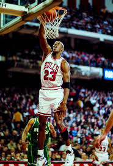 | 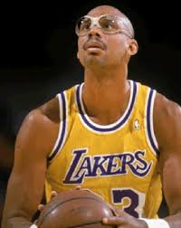 | 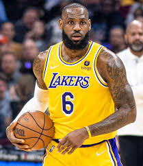 | 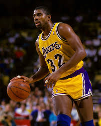 | 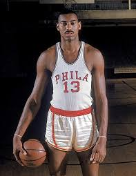 | 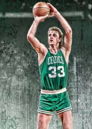 | 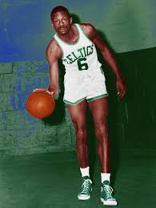 | 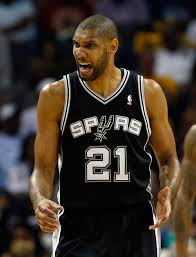 | 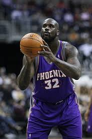 | 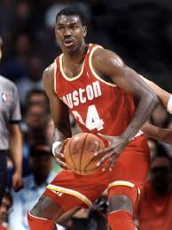 |
Com a ajuda da mídia, hoje é bem mais fácil termos acesso ao basquete internacional, devido a facilitação da transmissão ao público. Com isso, novos apaixonados no esporte já tem seus ídolos atuais bem definidos; mas e quanto aos antigos?
Separamos para vocês os melhores jogadores da principal liga de basquete do mundo, a NBA:
| 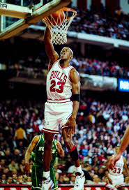 | 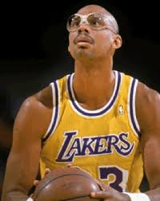 | 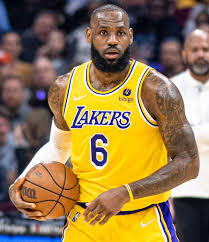 | 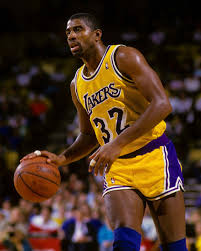 | 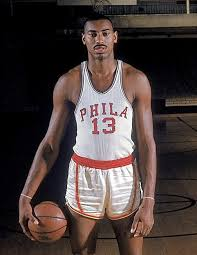 | 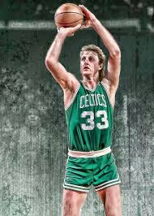 | 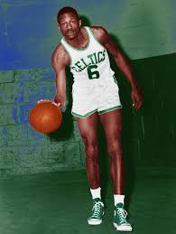 | 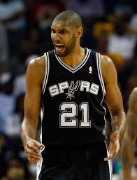 | 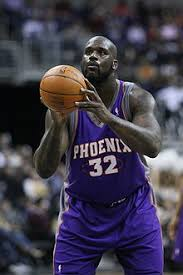 | 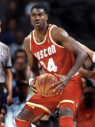 |